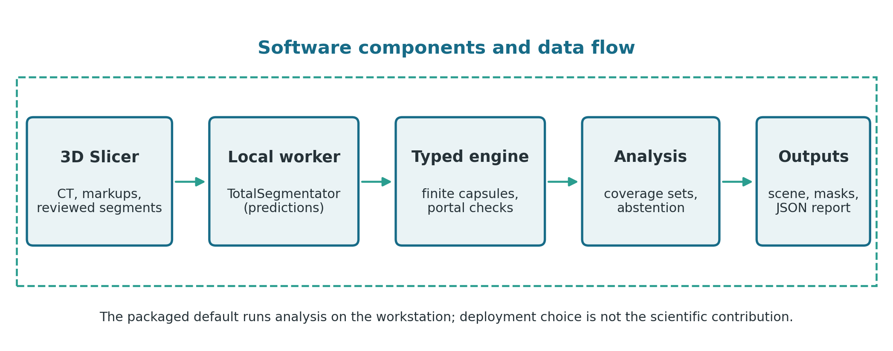
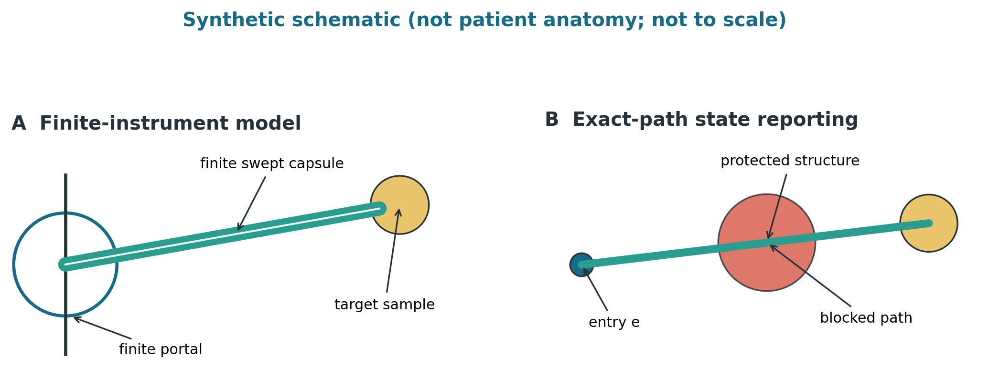
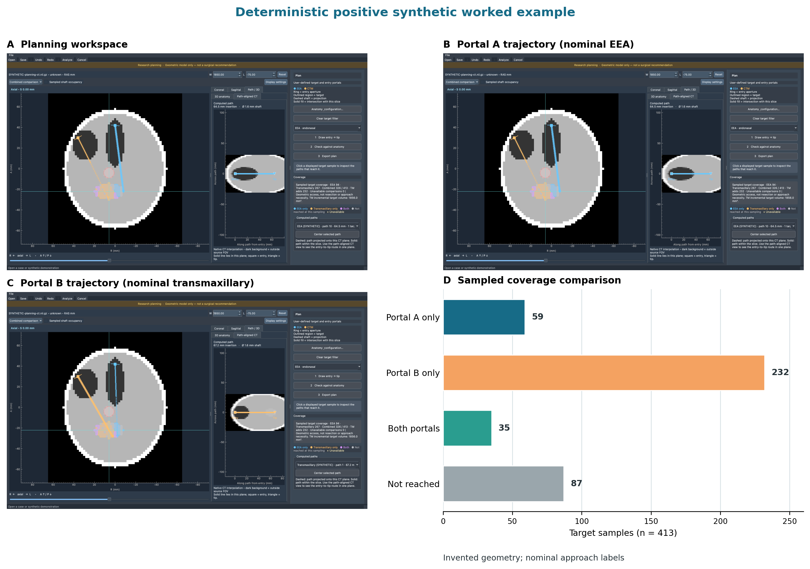

v0.2.1 / a0c6933258f60e370747cfd4096b9445eff8a572skullbase-corridor is open research software for reproducible, surgeon-supervised exploration of rigid skull-base approach corridors in physical image coordinates. It represents target samples, protected structures, finite circular portals, and finite rigid instruments, and records evaluated trajectories, insertion depths, clearances, coverage set operations, and explicit rejection or abstention reasons. The package combines a typed Python geometry engine, command-line and desktop interfaces, and a 3D Slicer module for image, segmentation, markup, linked-slice, three-dimensional, and report workflows. A deterministic worked example demonstrates feasible trajectories and distinct sampled coverage for two configured approaches. Verification includes analytical fixtures, independent geometric references, cross-platform automated tests, synthetic desktop workflows, and bounded public-data execution. The software supports research and method development; it is not clinically validated.
research software; computational geometry; medical imaging; 3D Slicer; finite instruments; skull base; trajectory planning
| Field | Value |
|---|---|
| C1 Current code version | v0.2.1 |
| C2 Permanent link to code/repository used for this code version | Source repository: https://github.com/abachu2005/skullbase-corridor; archived release: https://doi.org/10.5281/zenodo.23244307 |
| C3 Permanent link to Reproducible Capsule | N/A; no executable reproducible capsule has been deposited |
| C4 Legal Code License | Apache License 2.0 (Apache-2.0) |
| C5 Code versioning system used | Git |
| C6 Software code languages, tools, and services used | Python ≥3.11; 3D Slicer scripted module; Hatchling; GitHub; GitHub Actions |
| C7 Compilation requirements, operating environments, and dependencies | Python ≥3.11. Release CI passed on Ubuntu, macOS, and Windows with Python 3.11 and 3.12. Core dependencies: NumPy, SciPy, nibabel, SimpleITK, pydicom, Pydantic, and Typer. Optional desktop dependencies: PySide6, pyqtgraph, and VTK. The scripted module requires 3D Slicer 5.12. |
| C8 Link to developer documentation/manual | README.md, docs/USER_GUIDE.md, and slicer/README.md |
| C9 Support email for questions | abachu@luc.edu |
Issues may additionally be reported at github.com/abachu2005/skullbase-corridor/issues.
Computational descriptions of a surgical corridor can obscure distinctions that materially change a geometric result. An infinitely thin ray is not a finite-width instrument; an instrument has finite length; an oblique instrument must fit through an aperture; an alternative route is not necessarily available simultaneously with another route; and an unrepresented structure is not demonstrated free space. A sampled failure to reach a target is also not proof of physical or operative inaccessibility.
skullbase-corridor was developed to make these assumptions explicit and inspectable. The intended users are technically supported surgeons and researchers studying configured geometric scenarios. Portal locations, target samples, protected structures, registration, segmentations, instrument dimensions, and review state remain inputs requiring human review. The software does not convert these inputs into clinical ground truth.
The contribution is a reusable software representation of finite-instrument corridor geometry with traceable witnesses and conservative handling of incomplete information. Existing medical-image visualization and annotation functions are used through 3D Slicer [1]. The package adds typed corridor semantics, finite insertion and aperture constraints, exact-path state reporting, approach-specific set comparisons, incomplete-anatomy abstention, and checksummed exports. It supports reproducible software experiments without asserting that the configured openings are anatomically appropriate or that a geometrically feasible path is surgically safe.
3D Slicer provides an extensible environment for segmentation, registration, visualization, and image-guided-intervention research [1, 2]. Procedure-specific modules have supported brain laser-ablation planning, pedicle-screw trajectories, implant navigation, and stereoelectroencephalography workflows [3, 4, 5, 6]. These systems establish the value of integrating planning with image review, but do not address finite-instrument skull-base aperture geometry.
Computer-assisted neurosurgical trajectory planning has been studied for deep brain stimulation, keyhole procedures, and intracranial electrodes [7, 8, 9, 10, 11, 12]. The closest methods rank straight centerlines or cylindrical safety envelopes according to distances from segmented hazards. Shamir et al. map candidate cranial entries and placement uncertainty [9], while Bériault et al. use a cylindrical trajectory model [8]. The present software therefore does not claim novelty merely for assigning a nonzero diameter to a trajectory. Its distinction is the joint representation of finite insertion length, shaft and tip radii, a constrained portal aperture, target reach, exact retained witnesses, and alternative versus simultaneous coverage.
Quantitative skull-base anatomy commonly compares area of exposure, corridor
depth, angle of attack, surgical freedom, or working volume in cadaveric
specimens [13, 14, 15, 16, 17]. Those
measurements characterize named approaches and operative exposure. They do not
directly compute a patient-specific feasible set of finite rigid-instrument
poses against represented anatomy. skullbase-corridor complements rather than
replaces that literature: it evaluates a declared geometric model and does not
infer operative exposure or maneuverability.
TotalSegmentator and its nnU-Net foundation can reduce the effort required to construct image-derived models [18, 19], but general-purpose labels do not supply all fine skull-base neurovascular boundaries. The software therefore preserves missing structures as unavailable instead of interpreting automated segmentation as complete anatomy.
The src/skullbase_corridor Python package separates domain models, image input/output, geometry primitives and engines, analysis, application services, desktop views, anatomy adapters, and exports. Typed Pydantic contracts define cases and results. The command-line interface supports synthetic-case generation, analysis, and environment reporting. The optional Qt/VTK desktop application provides linked anatomical slices, three-dimensional inspection, editable configuration, asynchronous analysis, and export.
The scripted Slicer module integrates CT selection, markups, segmentation review, candidate display, exact evaluated paths, linked two- and three-dimensional views, scene persistence, and report export. A separate bounded bridge can export selected Slicer segments on the full CT grid, convert Slicer’s array order to engine order, retain the world-RAS affine, and import a saved coverage segmentation. Targets above the bridge’s 2,000-foreground-voxel limit are rejected rather than silently subsampled.
The packaged Slicer workflow launches a managed TotalSegmentator [18] process, using CPU or a compatible configured accelerator. Model predictions are labeled as predictions and require review. The geometry engine consumes reviewed image-derived structures independently of how those structures were produced.
Anand V. Germanwala, a cranial-base neurosurgeon, reviewed the software’s corridor model, intended research workflow, and limits on clinical interpretation. This expert review informed the methodology and presentation but was not a formal usability or clinical-validation study.

Figure 1. Software architecture and data flow from image review through model-assisted segmentation, finite-instrument analysis, coverage comparison, and export.
All engine geometry is represented in millimetres in a declared physical frame. Affine matrices map voxel indices to physical positions. Image loaders normalize declared RAS/LPS conventions and spatial units to RAS millimetres, and incompatible frames are rejected rather than silently aligned. Registration and resampling are explicit review operations.
Targets can be supplied as physical-coordinate points or mask-derived voxel centres. Complete voxel representations may carry physical cell weights computed from the affine determinant. Sparse samples support count-based coverage only and are not interpreted as tumour-volume percentages. Protected geometry can be represented by analytical spheres or affine voxel masks. Unsupported geometry, including the current unsupported mesh input route, causes abstention rather than being treated as empty space.
For entry point e, unit direction d, and target sample x, required axial insertion is
and perpendicular distance from the trajectory is
A target sample is a reach candidate only when insertion is nonnegative, does not exceed instrument length, and the perpendicular distance is no greater than the working-tip radius plus configured target tolerance. Shaft radius is not added to target tolerance.
The inserted instrument is modeled as a finite capsule from the entry point to the insertion depth required for the target. Collision and aperture checks conservatively use the larger of shaft radius and working-tip radius. A portal is a finite circular disk with a declared forward normal. The software checks forward traversal and conservatively tests whether the oblique shaft footprint fits the aperture. This is not a manufacturer-specific, articulated, deformable, or tissue-interacting instrument model.

Figure 2. Synthetic finite-instrument geometry schematic. (A) A finite swept capsule traverses a finite portal toward a target sample. (B) Exact-path evaluation retains collision states against represented protected geometry. This schematic is not patient anatomy and is not to scale.
Analytical sphere clearance is computed directly. Voxel masks represent closed affine cells. The coarse voxel backend uses conservative physical-space bounds and interpolation guards; optional near-boundary refinement checks candidate cells under a finite budget. Exhausting that budget preserves conservative blockage. Geometry required outside a protected mask field of view triggers the configured out-of-field policy.
Missing, unknown, unsupported, or out-of-field protected anatomy can produce abstention. An explicit exploratory policy may permit a conditional result, but affected quantitative claims remain incomplete or suppressed. These policies do not detect every missing structure, segmentation error, incorrect portal, or unmodeled tissue.
The engine evaluates a configured angular grid and may add target-directed and budgeted adaptive directions. This search is finite and not exhaustive. Each evaluated trajectory retains its direction, target indices, insertion depths, clearance information, and rejection or abstention reason. Consequently, “not reached” means that no evaluated path reached the sample; it does not mean that no path exists.
Reached target-index sets are retained separately by approach. Union, intersection, and incremental coverage are computed as set operations to avoid double counting. Simultaneous-access analysis additionally enforces angular separation and finite capsule-to-capsule clearance. Alternative-path union coverage is not interpreted as simultaneous feasibility.
Supported unobstructed centre-entry cases use geometry-aware interval-union integration for feasible solid angle. Protected-structure cases use spherical-cap grid quadrature with Voronoi area weights; added target-directed and adaptive witnesses receive no quadrature weight. Unsupported or nonconverged measurements are omitted. The software makes no general one-percent angular-accuracy claim.
A reader can generate and analyze a deterministic synthetic configuration:
python -m pip install -e '.[desktop,test]'
skullbase-corridor synthetic case.json
skullbase-corridor analyze case.json result.json
skullbase-corridor doctor
The output records normalized configuration, software and schema versions, source and result checksums, evaluated trajectories, coverage sets, and abstention reasons. The bundled desktop demonstration can be opened without patient data or network access. Changing an analysis parameter invalidates the displayed result until analysis is rerun.
In the reviewed-segment workflow, a user loads a CT and aligned segmentations, identifies target and entry geometry, selects target and protected-anatomy segments, optionally supplies approach-specific bone-removal masks, configures portal and instrument dimensions, and runs the external geometry engine. The output segmentation categorizes target samples as approach-only, shared, sampled-unreached, or unavailable. These categories are snapshots of the evaluated configuration, not live “safe corridor” volumes.
Slicer writes the selected CT to a private temporary workspace and starts the managed TotalSegmentator worker. The adapter maps available outputs to the CT grid, entry candidates are proposed, and exact finite paths are evaluated. The resulting state preserves model_feasible, blocked, conditional, unavailable, and invalid outcomes. model_feasible means that represented geometry did not block the configured finite instrument.
TotalSegmentator does not supply complete skull-base critical anatomy. Cranial nerves, cavernous-sinus contents, ophthalmic arteries, dura, and other structures can remain unavailable. The workflow displays these gaps as unavailable anatomy rather than treating them as free space.
Verification uses deterministic fixtures, independent geometric references, cross-platform automated tests, and programmatic desktop interactions. The release CI passed on Ubuntu, macOS, and Windows with Python 3.11 and 3.12. A source-workflow run preceding version 0.2.1 exercised public CT loading and generated masks in 3D Slicer 5.12.4. Two fresh native rerun attempts for version 0.2.1 did not complete because Slicer stalled during startup under Rosetta; therefore, the earlier run is not presented as release-specific acceptance. The positive worked example was verified programmatically. These tests establish bounded software execution, not independent usability or clinical validation.
The deterministic planning phantom contains an invented CT-like volume, a 413-sample ellipsoidal target, two finite portals, and three analytical protected spheres. It contains no patient data and is not an anatomical model. “EEA” and “transmaxillary” are nominal labels for synthetic Portal A and Portal B, respectively; they do not establish anatomically valid approaches. The same case was analyzed through the desktop workflow used for image-linked review. Portal A produced 27 feasible sampled trajectories reaching 94 target samples; Portal B produced 77 trajectories reaching 267 samples. Set comparison assigned 59 samples to Portal A only, 232 to Portal B only, 35 to both, 87 to sampled-unreached, and none to unavailable. The interface exposed 104 selectable trajectory witnesses and invalidated them when configuration state changed.

Figure 3. Positive synthetic worked example. (A) Linked-slice planning workspace. (B–C) Inspectable trajectories through Portal A (nominal EEA) and Portal B (nominal transmaxillary). (D) Sampled target-set comparison. All geometry and approach labels are invented for software demonstration; the result is not anatomical evidence.
For supported unobstructed analytical angular fixtures, an independent replay recorded 82 of 82 comparisons below a prespecified one-percent relative-error threshold; the maximum observed error was 0.0001204123%. This result applies to the geometry-aware unobstructed method, not protected-structure quadrature. In a separate grid-quadrature stress fixture, a small off-axis target retained 11.368% error at the finest grid. That is a resolution limitation of the protected-geometry estimate: users should treat its solid-angle value as descriptive, inspect convergence, and omit the measurement when convergence is not demonstrated.
Voxel-cell refinement was first checked with 530 synthetic and 120 queries from three public cases, then repeated under a frozen protocol for 4,720 queries across 118 eligible NasalSeg cases (40 per case). A clearance-bound violation means the reported positive clearance exceeded the independent cell-box optimizer’s upper distance bound after subtracting instrument radius. No false-clear, clearance-bound, or field-of-view-policy violations were observed. Refinement recovered 2,164 clear classifications that the coarse method conservatively blocked. In 1,190 budget-exhausted queries, the specified fallback preserved the coarse blocked classification; this was expected fallback behavior, not evidence that refinement completed. Because the public replay shares broad-phase candidate selection with the implementation, these observations test bounded numerical consistency rather than completeness.
NasalSeg v2 [20] supplied the public P001–P003 cases and the 118-case replay cohort. Twelve of 130 image/label pairs were excluded because image and label physical geometry did not match. Its air-space labels provide no operative-corridor reference standard; the dataset is used only for file, coordinate, and execution tests.
The software turns a corridor result from a single reachability label into an inspectable record: researchers can recover the finite path, insertion depth, represented obstruction state, target subset, and reason for rejection or abstention. This supports reproducible sensitivity studies of portal and instrument assumptions, direct comparison of alternative and simultaneous access without double counting target samples, and regression testing across geometry implementations. The Slicer integration places those records beside the images and segmentations from which inputs were derived. The immediate impact is methodological and educational: it provides a shared, auditable software substrate for phantom, cadaveric, and future clinically validated studies, rather than evidence that any approach is safe or superior.
The model omits tissue deformation, dissection planes, endoscopic optics, handle access, hemostasis, reconstruction, staged debulking, and other operative factors. It neither infers complete neurovascular anatomy nor measures safe resectability. Results depend on target and portal definitions, registration, segmentation quality, target sampling, finite direction sampling, instrument parameters, fields of view, and conservative voxel approximations.
The public dataset does not provide operative-corridor reference annotations. TotalSegmentator predictions require review and do not represent all relevant anatomy. No cadaveric, tracked-instrument, operative-video, clinical-outcome, or independent surgeon-usability study is reported.
Native application redistribution requires review of the exact bundled binaries and dependency notices, including applicable Qt licensing obligations. Automated Python tests are cross-platform; independent human usability testing has not been performed.
The model-assisted workflow depends on a large local machine-learning stack and first-use model-weight retrieval. Installation time, disk use, and inference latency vary substantially by platform and accelerator. The managed runtime isolates these dependencies from Slicer’s embedded Python, but does not remove their upstream compatibility constraints.
The source code is licensed under Apache-2.0. Dependencies retain their own
licenses. Version 0.2.1 is archived at
10.5281/zenodo.23244307 and corresponds
to Git tag v0.2.1 at commit
a0c6933258f60e370747cfd4096b9445eff8a572. The archive contains source, tests,
documentation, packaging scripts, and deterministic fixtures; it excludes
public CT archives, private data, model weights, and local sessions.
The source-release tooling uses an explicit allowlist, compares staged content with current files, records hashes, and runs wheel smoke checks. The Slicer package provisions an isolated per-user runtime without modifying Slicer’s embedded Python.
The retained NasalSeg manifest identifies version record 13893419, declared CC BY 4.0 terms, and archive SHA-256 60c6facf843685802c39e4adff4a05c081c1c4b6175c9cb573745c55abb0fa6a. The software does not redistribute the dataset.
Source code version 0.2.1 is archived on Zenodo under DOI 10.5281/zenodo.23244307 and developed publicly on GitHub. Synthetic fixtures and the worked-example generator are included in the repository. NasalSeg v2 is third-party data available from Zenodo record 13893419 under its stated terms and is not redistributed with the software. A separate persistent archive for the full development evidence is not part of the software release; the article reports the retained aggregate verification results.
This work used only synthetic data and publicly available, deidentified data, and did not involve human subjects research. It involved no recruitment, private records, chart review, outcomes, or identity linkage.
Images, predictions, temporary work products, Slicer scenes, and reports remain on the workstation unless the user explicitly exports them.
Hashes support integrity and traceability, not anonymization. User-entered case and approach identifiers may be identifying. Local paths, reviewer identities, registration filenames, screenshots, Slicer scenes, and visible annotations must be reviewed before sharing. Dataset licensing does not authorize reidentification or clinical claims.
Abhinav Bachu: Conceptualization, Methodology, Software, Validation, Investigation, Data curation, Visualization, Writing—original draft, and Writing—review and editing.
Raghav Rajesh: Investigation, Visualization, Writing—original draft, and Writing—review and editing.
Anand V. Germanwala: Methodology, Validation, Supervision, and Writing—review and editing.
This research did not receive any specific grant from funding agencies in the public, commercial, or not-for-profit sectors.
The authors declare that they have no known competing financial interests or personal relationships that could have appeared to influence the work reported in this paper.